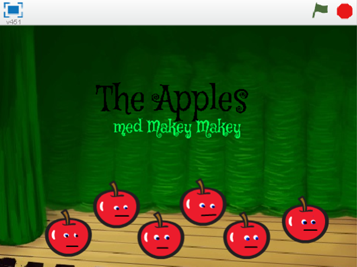
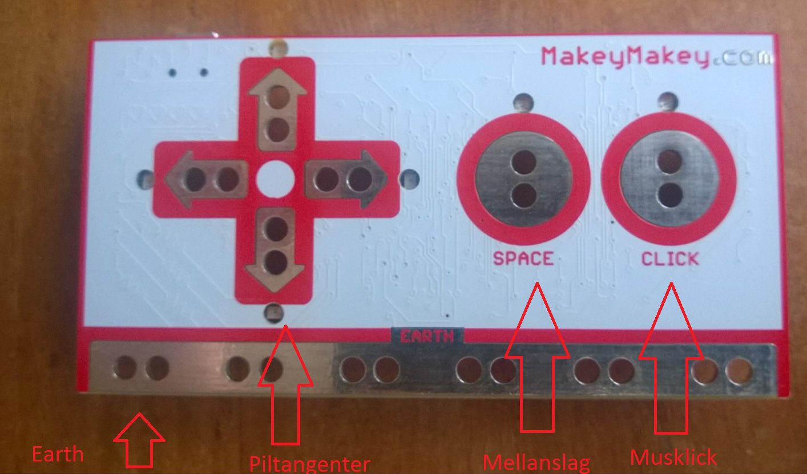
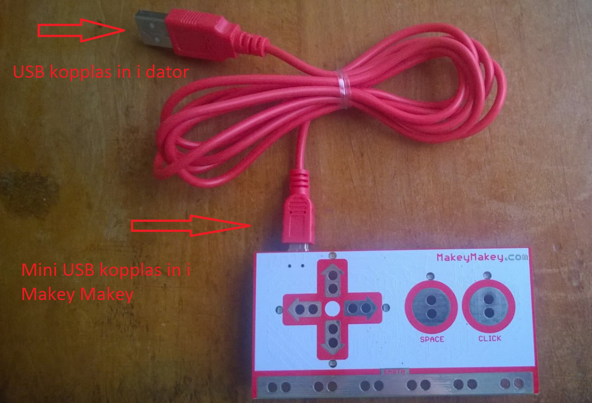
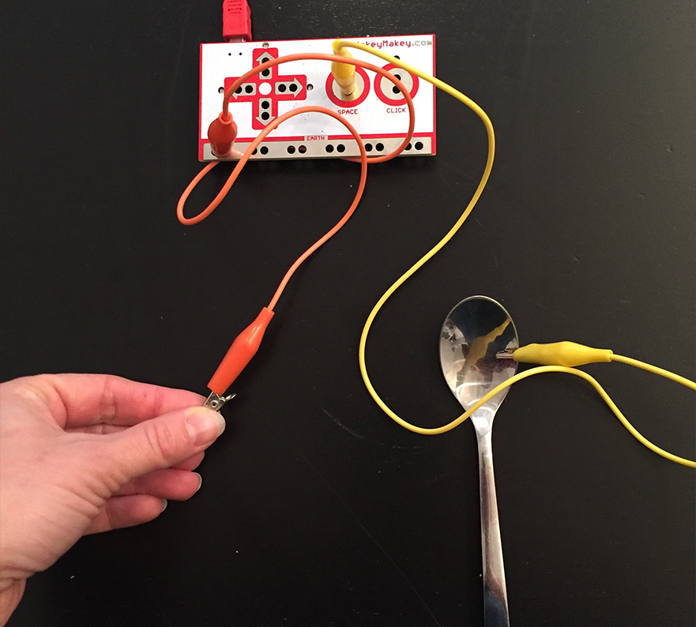
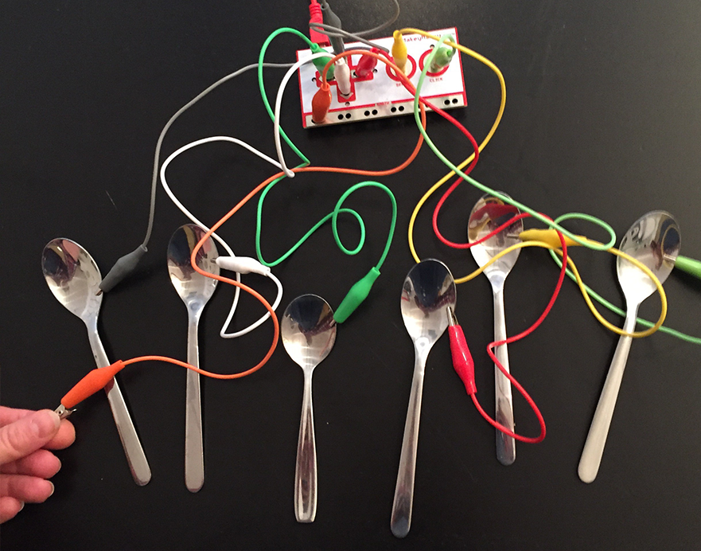
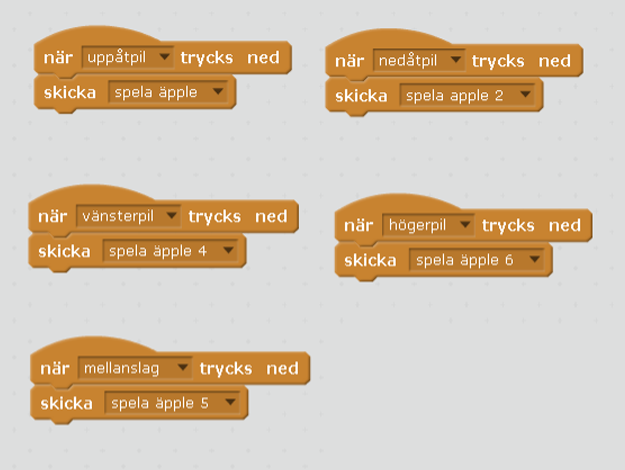
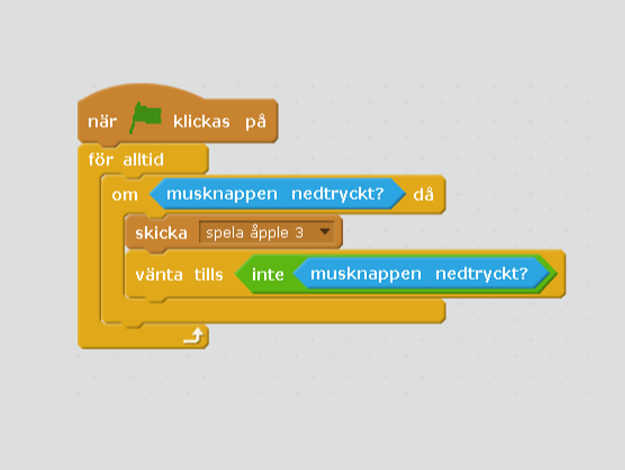

Om du har tillgång till Makey Makey kan du koppla den till din fantasisynth, som du skapat i Scratch, och spela musik på riktiga äpplen! För att göra det kommer du att behöva ändra lite i koden i ditt Scratch-projekt som du skapade i uppgiften Fantasisynth
Makey Makey är ett kretskort som kan användas för att styra program på din dator med saker som är elektriskt ledande, som till exempel en frukt, sked eller en kompis!
Du kan titta på en film som visar hur du använder Makey Makey här:
Interactive Institute - introduktion till Makey Makey
Här är ett exempelprojekt för hur du gör "Fantasisynth med Makey Makey" i Scratch: https://scratch.mit.edu/projects/130726473/

Vi kopplar in Makey Makeyn i datorn och testar hur den fungerar!Makey makeyn överför signaler från det ledande objektet, via kretskortet till datorn. De tangenter som finns på en Makey Makey är uppåtpil, nedåtpil, högerpil, vänsterpil, mellanslag och musklick. Precis som om du skulle använda ett tangentbord och en mus.


Om det dyker upp meddelanden på skärmen, stäng ner dem.
Koppla in en alligatorkabel, kabel med klämmor, längst ner på Makey Makeyn där det står earth. Kläm fast kabeln i några av hålen på metallytan. Det spelar ingen roll vilken färg kabeln har, vi använder orange här i exemplet.
Koppla in en alligatorkabel i Makey Makeyn i hålen där det står space. Det betyder att du kopplar in den till mellanslag i datorn. Koppla andra klämman till någonting som du tror är ledande – en sked till exempel!

Testa om det fungerar! Ta tag i alligatorkabeln som är kopplad till earth i ena handen. Det gör du för att jorda kopplingen mellan Makey Makeyn och skeden. Rör samtidigt vid skeden. Om det lyser på Makey Makey betyder det att du leder ström! Du kan nu öppna en texteditor som Notepad eller Word för att testa om det blir mellanslag eftersom den är kopplad till space.
Koppla nu in alla alligatorkablar i Makey Makeyn! Du kopplar alltså varsin alligatorkabel till hålen för alla fyra piltangenter och till click, på samma sätt som du gjorde med kabeln till space.
Koppla den andra klämman på varje alligatorkabel vidare till vad som helst som kan leda ström - flera skedar eller något helt annat.

Testa om det fungerar! Prova dig fram och se vad som kan vara tangenter till din fantasisynth, du kanske vill spela på äpplen, bestick eller på dina kompisar?
Nu behöver du byta ut vilka tangenter som din fantasisynth spelas med, till de tangenter som finns på Makey Makeyn. På så sätt kommer du att kunna spela på fantasisynthen i Scratch!
Dra ur Makey Makeyns USB-kabel ur datorn. Gå till Scratch och öppna ditt projekt som du gjorde i förra uppgiften, "Fantasisynth". Välj Spara som kopia och döp ditt nya projekt till "Fantasisynth med Makey Makey". På så sätt har du kvar den vanliga synthen också.
Klicka på SCEN och titta på skripten som finns där och som du ska ändra i. Börja med skriptet som skickar meddelandet "spela äpple". Ändra i blocket när _ trycks ned och byt ut "a" till uppåtpil i rullistan.
Gör på samma sätt med de andra tangenterna, men hoppa över "äpple3" tills vidare, för den ska ha ett specialskript. Byt ut koden så att:
Skriptet för "spela äpple 6" har högerpil.

Klicka nu på skriptet för "spela äpple 3". Denna ska skicka meddelandet när du klickar på musknappen. Därför behövs det ett skript som för alltid känner av om musknappen är nedtryckt och då skickar meddelandet.
Du behöver också lägga in att vänta tills musknappen inte är nedtryckt innan programmet gör något annat.

Testa ditt projekt! Klicka på START. Använd först tangentbord och mus och testa om skriptet fungerar. Händer det något när du klickar med musen? Spelas det en ton? Spelas det toner när du använder piltangenter och mellanslag?
Nu ska du få testa om du kan spela "Blinka lilla stjärna" med dina ledande saker istället för tangentbord!
Koppla in Makey Makey i datorn med USB-kabeln.
Se till så att alla alligatorkablar är inkopplade i Makey Makey, i hålen för alla fyra piltangenter, space, click och att de med andra klämman sitter fast i dina saker som leder ström.
Se till så att en alligatorkabel är kopplad till earth. Håll i den andra klämman för att jorda kopplingen.
Testa om det fungerar! Rör nu vid alla de olika saker som du har kopplat via Makey Makeyn till datorn. Vad händer? Kan du spela toner på din synth? Kan du lista ut hur du ska spela "Blinka lilla stjärna" med ditt nya instrument?
Om du vill komponera egen musik med din fantasisynth har du här en tabell över miditoner (nummer 60, 62 och så vidare) som du kan använda i Scratch och som motsvaras av bokstavsnoter. Testa dig fram eller sök på nätet efter noter till din favoritmusik!
Tabellen hittar du även här på Scratch Wikipedia.
Grattis, nu har du gjort klart uppgiften.
Glöm inte att spara ditt nya projekt! Döp det gärna till uppgiftens namn så att du enkelt kan hitta den igen.
Testa ditt projekt
Visa gärna någon det som du har gjort och låt dem testa. Tryck på DELA för att andra ska kunna hitta spelet på Scratch. Gå ut till projektsidan och låt någon annan testa spelet!